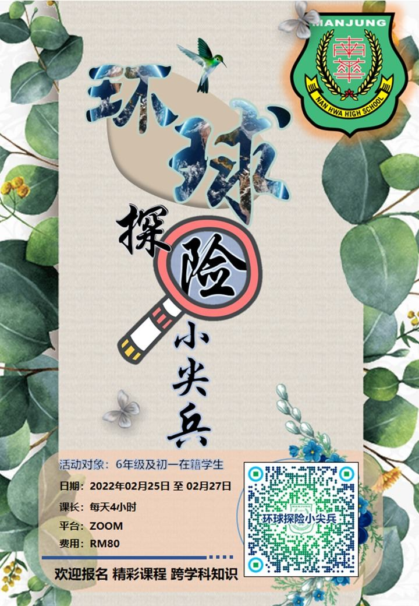

为了充实孩子们的假期生活，让孩子体验难忘的旅行，曼绒南华独立中学特此主办【环球探
为了充实孩子们的假期生活，让孩子体验难忘的旅行，曼绒南华独立中学特此主办【环球探险小尖兵】跨学科知识线上生活营，敬请各校鼓励贵校六年级及初一学生积极参与此意义非凡的活动，距离报名截止还有一个月，欢迎各校再次提醒师生关注。
详情请扫描海报二维码，或致电热线 011-61616267。
线上报名表格
https://forms.gle/CPsjqhK9xxhr7SiZ7
报名截止日期：2022年2月14日
